Star webPRNT User's Manual
スター精密クラウドサービス使用方法 (iOS) -Star webPRNT Browser -
スター精密クラウドサービスを利用いただくことで、Star webPRNTブラウザー(iOS/Android)から印刷するデータをスター精密クラウドサービスへアップロードすることができ、 後からアップロードされたレシートデータをAllReceiptsアプリを使用して参照できます。
- スター精密クラウドサービスをご利用いただくには、事前にスター精密クラウドサービスへのアカウントの登録が必要です。アカウント登録が完了していない場合、下記リンクからアカウント登録を行います。
スター精密クラウドサービス（www.starmicronicscloud.com）
- 使用する端末がインターネットに接続されていることを確認します。
スター精密クラウドサービスをご利用いただくには、ネットワークに接続されていることが必要となります。 ネットワーク接続の状況により、レシート印刷時にQRコードの付加がされているのにスター精密クラウドサービスへデータがアップロードされない場合があります。 あらかじめご承知おきください。 - 下記リンクの手順に従い、Star webPRNT Browserの動作確認を行います。
使用方法 -Star webPRNT Browser -
- スター精密クラウドサービスアイコンを表示させます。
設定 > Star webPRNT を開き、 「Full Screen」をオフ、 「Register Icon」をオンに設定します。 - スター精密クラウドサービスにログインしてデバイス登録を行います。
Star webPRNTブラウザーのスター精密クラウドサービスアイコンをタップし、登録ダイアログを表示します。 ユーザー名とパスワードを入力し、登録ボタンを押してください。 ログインに成功したらデバイス登録を行ってください。 デバイス登録が完了したらプリンターモデルの確認、レシートアップロード設定を行います。 - 使用するプリンターモデルを選択します。
設定 > Star webPRNT > Model を開き、使用するプリンターモデルを選択します。
SM-S、SM-Tシリーズをご使用の場合、StarPRNTエミュレーションを選択してください。ESC/POSエミュレーションではスター精密クラウドサービスをご利用いただけません。 - レシートデータをアップロードするかどうかを設定します。
「Print Data Upload」をオンにすると、レシート印刷時にQRコードの付加を行い、同時に印刷するデータをスター精密クラウドサービスにアップロードします。
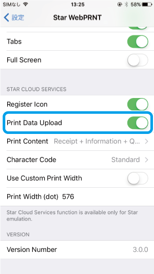
- Star webPRNTブラウザーが印刷する内容を設定します。
- Receipt + Information + QRCode
- レシートデータ、インフォメーションロゴ、QRコードを印刷します
- Information + QRCode
- インフォメーションロゴ、QRコードを印刷します
- QRCode Only
- QRコードのみ印刷します
- アップロードするレシートデータの文字コードを設定します。
- Standard
- 英語、フランス語、ポルトガル語、スペイン語、ドイツ語のレシートデータをアップロードする場合に選択します
- Japanese
- 日本語のレシートデータをアップロードする場合に選択します
- 必要に応じて、プリンターの印字領域を設定します。
通常はプリンターモデルの選択時に自動で各モデルのデフォルト値に設定されるため、変更は不要です。 デフォルトの印字領域を使用する場合は、Use Custom Print Widthをオフにします（初期設定：オフ）。
プリンターの印字領域を変更した場合、Use Custom Print Widthをオンにして、 変更後の印字領域(dot)を入力します。 プリンターと同じ印字領域が設定されていない場合、アップロードされたレシートデータに不良が発生する原因となります。 - Star webPRNTブラウザーのアプリに戻り「Try Star webPRNT」からサンプルレシートを印刷します。 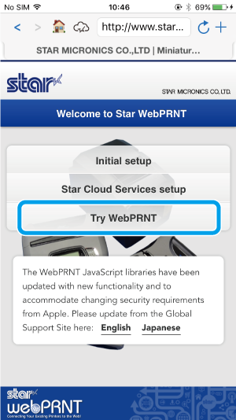
- App Storeより「AllReceipts」をインストールします。 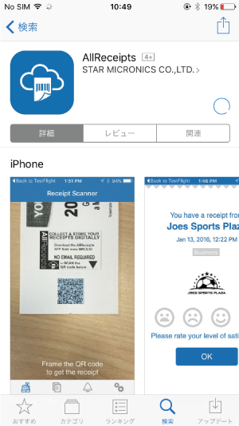
- レシートに印刷されたQRコードをAllReceiptsアプリで読み取り、アップロードされたレシートデータを確認します。 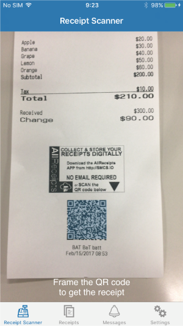
- スター精密クラウドサービスへのデバイス登録ダイアログを開くアイコンを表示するかどうかを設定できます。
デバイス登録ダイアログを開くアイコンが不要な場合、Register Iconをオフにすることで非表示にできます。 アイコンを非表示にしても、デバイス登録は解除されません。
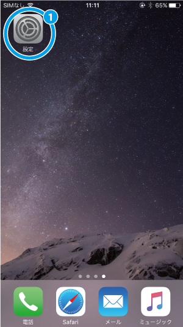

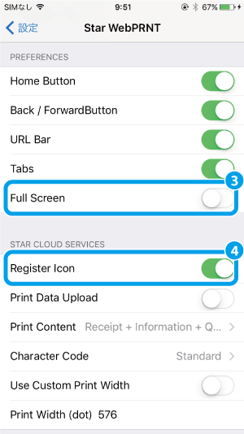
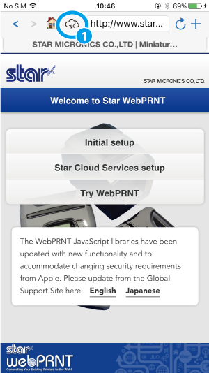
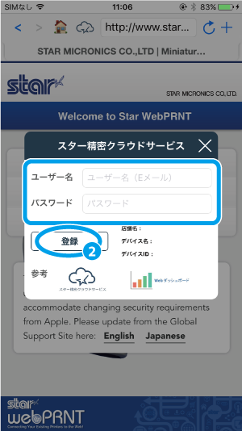
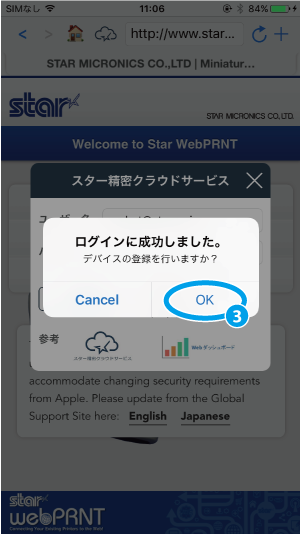
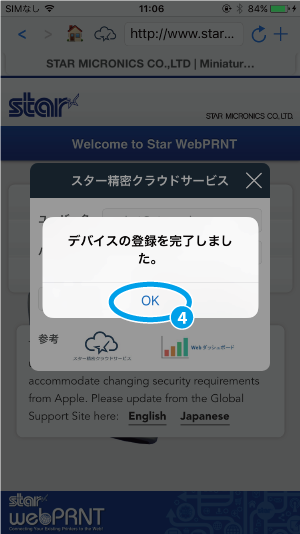
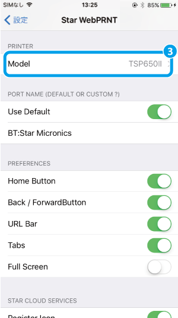
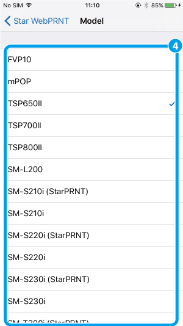
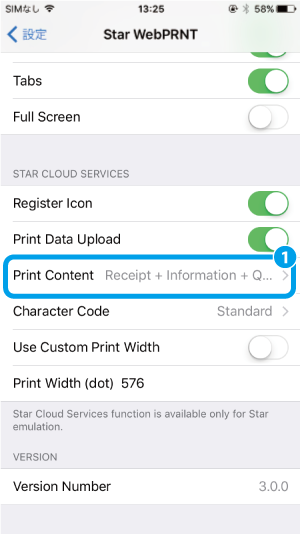
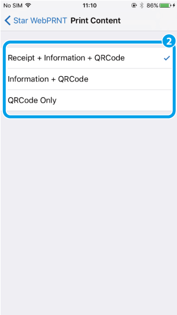
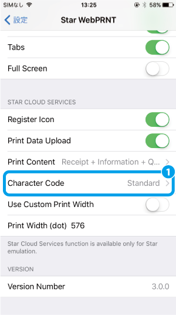
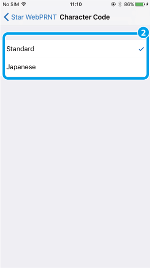
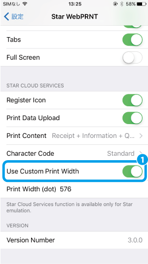
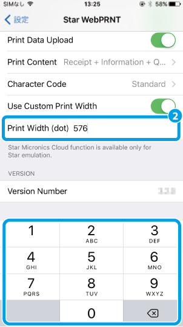
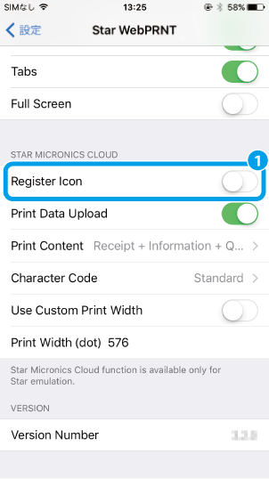